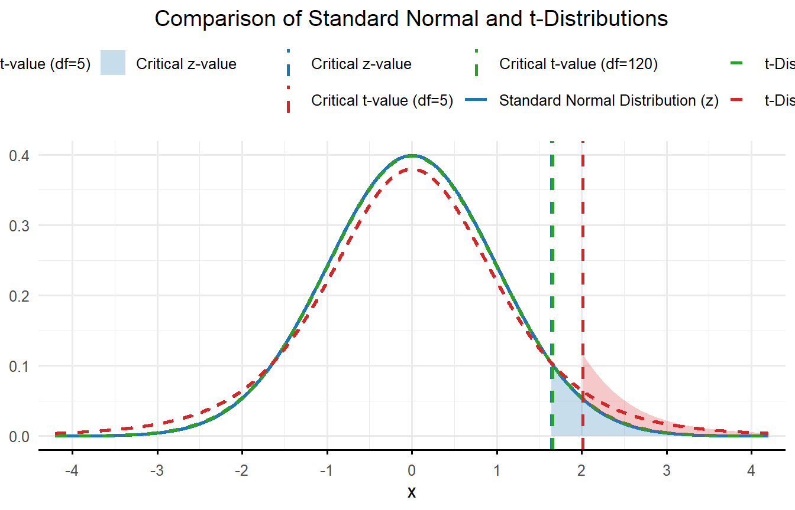
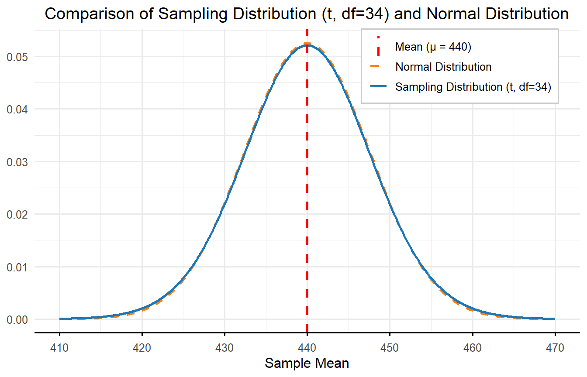
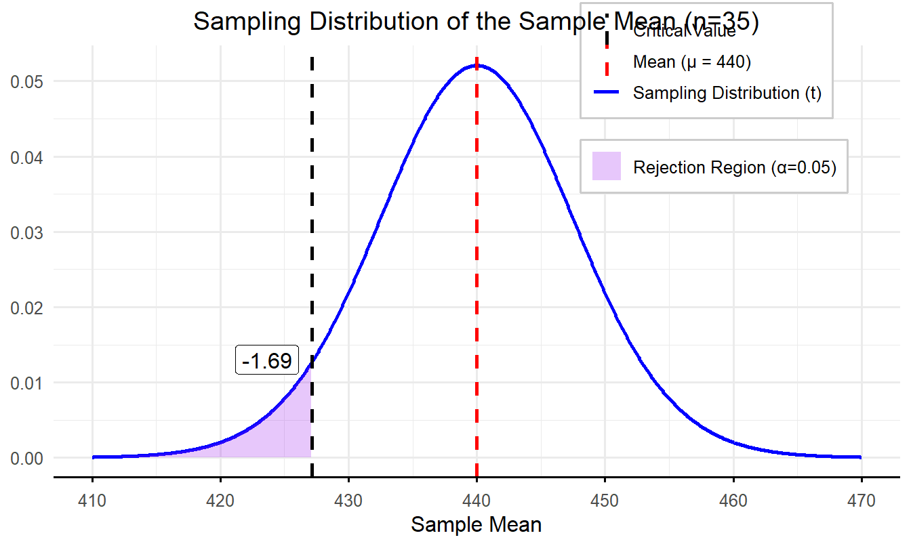
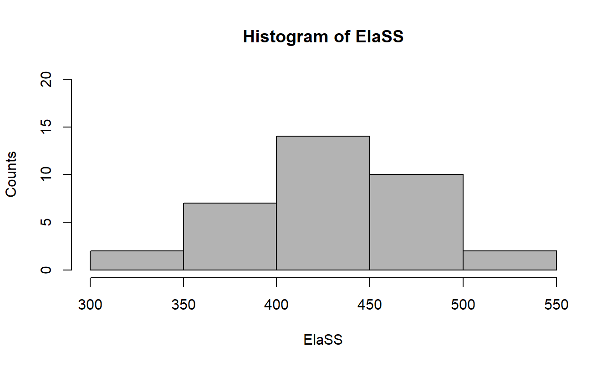
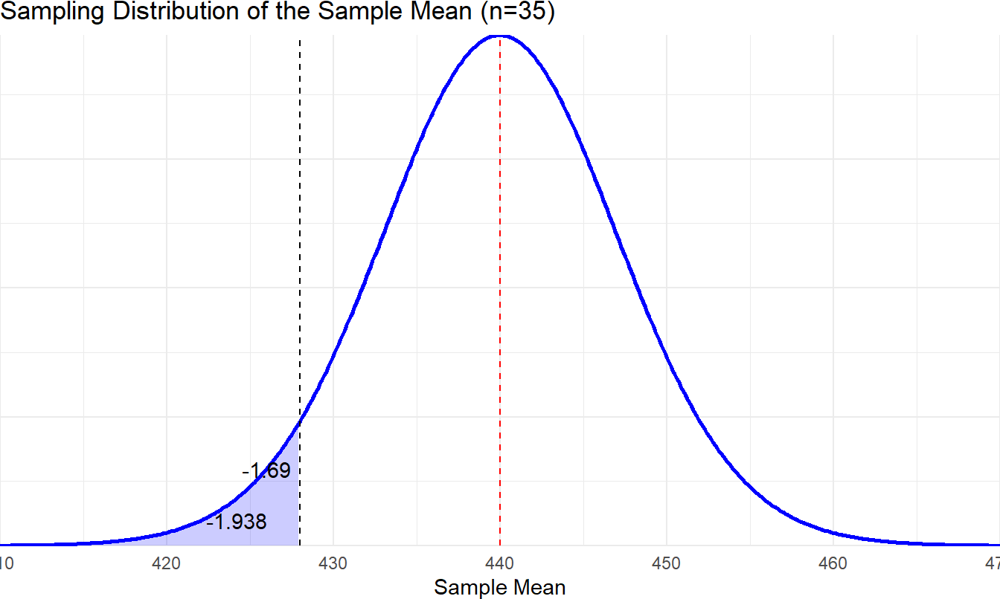
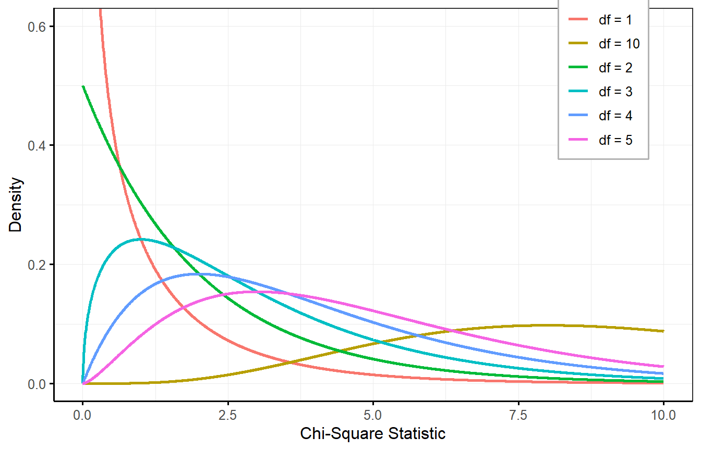

8 Chapter 8
Evaluating Group Averages Against a Benchmark: One-Sample t Test and Goodness-of-Fit Analysis
Learning Objectives
By the end of this chapter, you will be able to:
Describe the differences between z tests and t tests, including when to use each based on knowledge of population parameters and sample characteristics.
Calculate and interpret the test statistic, p value, and effect size for one-sample t tests and goodness-of-fit analyses.
Clearly explain the distinction between statistical significance and practical significance, and evaluate both to provide a comprehensive understanding of research findings.
Use confidence intervals to quantify uncertainty in sample mean estimates and evaluate the plausibility of a null hypothesis.
We just learned about z tests in the previous chapter, which you can conduct if you want to compare a sample mean to a population with a known mean and standard deviation. Often, however, we do not know the population standard deviation (σ), and we must estimate it with the sample statistic, in this case sample standard deviation (s). When this happens, we can no longer rely on the standard normal distribution, also called the z distribution, as it assumes precise knowledge of σ. Instead, we use a t distribution, which accounts for the added uncertainty of estimating σ. In these cases, we use a t distribution, which closely resembles its z-distribution counterpart but with two key differences.
First, the tail ends of the t distribution take longer to approach the X-axis compared to the z distribution. This is because we are estimating the population standard deviation, and that means we have more uncertainty. If you look at figure 8.1, imagine drawing a vertical line out towards one of the ends. Can you see how there would be more area under the curve for the t distribution with just 5 degrees of freedom? Shaded areas under the curve represent 5% of the total area. This means the sample mean must be farther from the population mean before we can confidently conclude that the observed difference reflects something other than random chance.
Second, there is more than one t distribution, and the shape of the distribution depends on your sample size. Recall that a larger sample size leads to a smaller standard error, which in turn increases your statistical power to detect a significant effect. You can see how different t distributions look in figure 8.1. The larger the sample size, the closer the t distribution becomes to a z distribution. Once n > 120, the two distributions are almost identical. Having such a large sample makes up for the fact that we are estimating the population standard deviation.
Another way to look at this is that the t distribution is related to the degrees of freedom. You must know the degrees of freedom to utilize a t table. Since sample standard deviation is used to compute the estimate of standard error, the degrees of freedom for a t test are calculated by using n - 1.
8.1 Example: Conducting one sample t-test
Now, let’s walk through an example of conducting a one-sample t test. Let’s think back to the example from the last chapter, where we compared a sample mean to a population mean with the z test. We have a similar, but slightly different, scenario this time. We have a sample of just 35 test scores from a single third grade class. The teacher is concerned that their students are underperforming in English Language Arts (ELA) and hypothesize their class will score below the state average of 440. When the results were returned to the school, the class’s average score was 425.26. Is this average significantly lower than the expected value of 440? Let’s conduct a hypothesis test to find out.
Step 1: Determine the null and alternative hypotheses.
Just like last time, the null hypothesis is that there is no difference between the teacher’s class and the overall state population. So, the null hypothesis is:
\[ H_0: \mu = 440 \]
This time, however, we are going to use a directional, or one-tailed test, because the teacher is specifically concerned that the students are scoring lower than the general population. So, the alternative hypothesis is:
\[ H_1: \mu < 440 \]
There are 35 students in this class, which might be why they are not doing so well, so n = 35. The sampling distribution in this case would be composed of the means of all possible samples of size n = 35 taken from the state population of third graders. It would be centered at μ = 440 (the population mean, which we know), but we must calculate the standard error using the sample standard deviation. The sample standard deviation (s) happens to be 44.994.
\[ \frac{s}{\sqrt{n}} = \frac{44.994}{\sqrt{35}} = 7.605 \]

Step 2: Set the criteria for a decision.
We will set the alpha level (α) to 0.05. So, we will reject the null hypothesis if the p value is less than 0.05. Since we are conducting a one-sided directional test, the entire rejection region is in the left tail of the distribution. To find the critical value we first need to consider our degrees of freedom. For a t test, df = n – 1, so we have 34 degrees of freedom. In the Critical Values of t distribution table in the appendix, there is no line for df = 34, so round down to the nearest degrees of freedom (30) as a conservative estimate. If you use an online calculator, which allows you to enter precise degrees of freedom, you will find that the critical value for 34 degrees of freedom at a .05 alpha level is -1.69. It is negative because we expect the sample mean to be lower than the population mean.

Step 3: Check assumptions and compute the test statistic.
There are three assumptions underlying this test. They are:
Random sampling: The scores come from a random, representative sample.
Independence: The scores are independent of one another.
Normality: The population score distribution is approximately normal.
It is okay that we didn’t choose a random sample representing all third graders in the state because the inferences we will draw are only about this one class. We can’t see the entire population distribution, but the histogram for the scores looks almost perfectly normal.
(fig 4 here)
If the distribution was way off, we could still proceed but be very cautious about our interpretation of the results. Since our sample size is greater than 30, we would be okay even without such a normal distribution due to the central limit theorem. So, we are all set to calculate our test statistic.
For the one-sample t test, we use the formula:
\[ t = \frac{\bar{X} - \mu}{\frac{s}{\sqrt{n}}} \]
Notice that the formula is very similar to what we used to calculate the z statistic. The only difference is that we now estimate the standard error using the sample standard deviation and sample size in the denominator because we don’t know the value of the population standard deviation (𝜎).
The numerator represents the difference between the observed and test value specified in the null hypothesis. The symbol 𝜇 represents the population parameter specified in the hypothesis, often referred to as the null value, as it reflects the assumed true population mean under the null hypothesis. The other values for the test statistic come from our sample data.
\[ t = \frac{425.26 - 440}{\dfrac{44.994}{\sqrt{35}}} = \frac{-14.74}{7.605} = -1.938 \]
Step 4
a: Find the p value.
We must now determine whether our t statistic is significant, which would mean that it is very unlikely we obtained this value due to chance alone. In step 2, we said that the critical value for this test was -1.69. Picture a t distribution and draw a vertical line about 1.7 standard deviations below the mean. Anything to the left of that is in the rejection region. Is our t statistic of -1.938 in the rejection region? Yes – it is farther away from the center than our critical value. This means our p value is less than 0.05.
(fig 8.5 here)
b: Draw a conclusion and report your conclusion.
Given that our p value is less than 0.05, the appropriate decision is to reject the null hypothesis. In other words, we have found evidence in favor of the alternative hypothesis. Students in this class scored significantly lower than the overall state population on the test. Let’s assume we use statistical software to land on a p value of 0.03 for this analysis.
8.2 Reporting Results in APA Format
The American Psychological Association, 7th edition (APA, 2019) has decided that there is a correct way to report the results of a t test. In this case, you would report the results of our test like this: Scores for students in this third-grade class (M = 425.26) were significantly lower than scores of third graders statewide, t(34) = -1.938, p = 0.03.
The most important part of the reporting is the section that starts with the observed t statistic. You put the degrees of freedom in parentheses immediately following the t; all statistics (e.g., M, t, p) are in italics, and you report the p value after the exact t statistic. Remember, that even if the statistical software says p = 0.000, you should never report that. Instead, you should report p < 0.001. You can also just report that p < 0.05 (your alpha level) if you do not have access to statistical software.
8.3 Cautions with One-Sided Tests
One caution with directional, one-tailed tests is that you need to decide on one-tailed versus two-tailed tests up front. It is really not okay to decide after you see the results that you are going to conduct a one-tailed test. You should only be conducting a one-tailed test if you have good reason to expect the sample mean to be lower or higher than, rather than just different from, the population mean. And while a one-tailed test has greater power to detect a significant result, there is risk involved. Imagine that we expected the sample mean to be significantly lower, but it turned out to be significantly higher than the population mean. If we had been conducting a two-tailed test, that would be a significant difference from the population mean. But since our alternative hypothesis was that μ < 440, we would fail to reject the null (non-significant result). Most of the time you will be using a two-tailed test for the possibility of a difference in either direction. Only use a one-tailed test if you have a very good reason and you decide ahead of time to do so.
Another caution is that type III error is introduced when using directional tests. Type III error occurs when a correct conclusion is drawn for the wrong reason or when the wrong question is asked, and a statistically valid result is obtained for that incorrect question. For example, a school district wants to determine whether lessons learned from a new professional development program will reduce the time teachers spend on grading. After collecting data and running a statistical test, the null hypothesis (that the program has no effect on grading time) is rejected, and a significant difference was found. District leadership interpreted this result as evidence that the program was reducing grading time, so they decided to expand the program. However, a few weeks later, teachers were demanding that the district take a closer look at the data because they claimed to be spending more time grading. Sure enough, district leadership found they made a mistake: while the statistical test correctly identified a significant difference in grading time (rejecting the null hypothesis), they misinterpreted the direction of the effect. The program increased grading time instead of reducing it. This misinterpretation of the direction of the significant effect is a Type III error: correctly rejecting the null hypothesis but misunderstanding what the result actually implies.
8.4 Understanding Effect Size
Hypothesis testing is important for knowing if there is a significant difference between a sample and the population, but it will not tell you how big the difference is. A hypothesis test will almost always return a significant result when you have a large sample size because a test statistic is a function of standard error, which decreases as sample size increases.
Given the mean difference and standard deviation remain the same, as sample size increases, the test statistic always increases. For example, if you wanted to conduct a one-sample t test with a sample mean of 22 and a SD of 2 compared to a population mean of 23.5, you are sure to get a statistically significant result when n = 100,000 even if the p value is > 0.05 when n = 10. It is somewhat paradoxical that with sufficiently large sample size, the statistical power becomes strong enough to flag even small differences as significant, even if those differences are practically trivial or meaningless. Therefore, it is important to have another way to represent the meaningfulness, or practical significance, of a statistically significant result. That is why we calculate and report effect size.
Of course, one way of understanding the size of the difference is to simply compare the sample mean and population mean on the original measurement scale. Someone who understands a particular testing instrument could make their own judgment as to whether a difference of about 15 points was meaningful, or cause for concern. But it helps to have a common language for reporting effect size, and the way we do that is to standardize the effect.
Effect size is a numeric measure that indicates the strength or meaningfulness of the relationship or difference between variables in a study. Unlike p values, which only tell you whether an effect exists, effect size tells you how large or meaningful that effect is. It provides a standardized way to understand the practical significance of research findings, which is particularly useful when comparing results across studies.
Estimated Cohen’s d is a common measure of effect size for t tests. We hope you remember back in chapter 5 when we learned about z scores, which are also known as standardized scores because they are measured in standard deviation units. When we use estimated Cohen’s d as a measure of effect size, we are doing the same thing. Cohen’s d quantifies the magnitude of the difference between two means relative to the variability in the data and provides a standardized measure of practical significance, helping to interpret the importance of the result by allowing us to express the effect size in terms of standard deviation units. This approach provides a common scale, making it easier to compare results across different tests or measures, rather than relying on raw score differences.
8.5 Calculating Estimated Cohen’s d
One quick note to get us started – we are being careful to refer to the effect size we use for t tests as estimated Cohen’s d to distinguish it from Cohen’s d used in z tests. This distinction arises because effect sizes for t tests are calculated using sample data, whereas z tests rely on known population parameters. But out in the world of educational research, you will normally just hear it called Cohen’s d regardless of the type of analysis used.
Here is the formula for estimated Cohen’s d for a one-sample t test:
\[ d = \frac{\bar{X} - \mu}{SD} \]
In our example above, the sample mean (X̅) = 425.26 and SD = 44.994. The population mean (μ) = 440. Using the formula,
\[ d = \frac{425.26 - 440}{44.994} = -0.33 \]
That is, our effect size is -0.33, which according to the following table from Privitera (2018) is a medium effect size. In our sample research question, this means the students in the third-grade class had scores that were about one-third of a standard deviation below the state average. A positive effect size indicates the sample mean was larger than the population mean, and a negative effect size indicates it was smaller. Since effect size can be negative, you need to consider the absolute value when making a judgement about the strength of the effect.
Cohen’s Effect Size Conventions
| Description of Effect | Effect Size (d) |
|---|---|
| Small | ( d < 0.2 ) |
| Medium | ( 0.2 < d < 0.8 ) |
| Large | ( d > 0.8 ) |
Source: Adapted from Privitera, G. J. (2018). Statistics for the Behavioral Sciences (3rd ed.). SAGE Publications.
Before we move on, we want to remind you of a few other similar formulas because we had a tendency to get them confused in the past. First, here is a reminder of the formula for calculating z scores:
\[ z = \frac{X - \mu}{\sigma} \]
Do you see the differences between that and the formula used to calculate Cohen’s d? First, with a z score, we only have one X (i.e., a particular value), rather than a sample mean, or X̅. But even more importantly, we use the population standard deviation (σ) rather than the sample SD to calculate a z score. But overall, the concept is exactly the same: both z scores and Cohen’s d involve converting a raw difference from the mean into standard deviation units. The key difference lies in the specific inputs used for calculations.
Do you see the differences between that and the formula used to calculate Cohen’s d? First, with a z score, we only have one X (i.e., a particular value), rather than a sample mean, or X̅. But even more importantly, we use the population standard deviation (σ) rather than the sample SD to calculate a z score. But overall, the concept is exactly the same: both z scores and Cohen’s d involve converting a raw difference from the mean into standard deviation units. The key difference lies in the specific inputs used for calculations.
Another place we have seen learners, including ourselves, get tripped up is confusing the formula for Cohen’s d with the formula for the t statistic itself. Here they are, side by side:
\[ \begin{aligned} d = \frac{\bar{X}-\mu}{SD}, \quad t = \frac{\bar{X}-\mu}{\dfrac{s}{\sqrt{n}}} \end{aligned} \]
Even though the first formula, Cohen’s d, uses SD to represent the sample standard deviation, and the second, t statistic, uses s, they represent the same value. So, the only difference is that d has nothing to do with sample size, but sample size (n) is hugely important in calculating standard error, which is the denominator for the t statistic. For Cohen’s d, the mean difference is divided by the standard deviation, which represents the variability in the actual scores within the sample. For the t statistic, the mean difference is divided by the standard error, which represents the standard deviation of the theoretical sampling distribution. By definition, it is going to be much smaller than the original sample standard deviation.
In this example, the same mean difference (-14.743) served as the numerator for both d and t. When we divided it by standard error for the t statistic, we got -1.938. This told us how far our sample mean was from the center of the sampling distribution. When we divided it by the sample standard deviation for Cohen’s d, we got -0.33, which told us how far our sample mean was from the population mean, the center of the population distribution.
If nothing else, we hope this helps you see why we need both effect size and hypothesis tests. Effect size tells us how big a difference is while the hypothesis test tells us whether we can be confident the difference is a result of something other than chance. Effect size does not depend on sample size, but you are more likely to get a significant result from your hypothesis test as you increase the sample size.
It is common to report effect size after the results of your hypothesis test. For example, scores for students in this third-grade class (M = 425.26) were significantly lower than scores of third graders statewide, t(34) = -1.938, p = 0.03, d = -0.33. You might also choose to report the significant result followed by a statement that Cohen’s d (-0.33) indicated a medium effect size. Keep in mind that if you have a small sample size, you might be able to calculate a large effect size even without a significant result. This can be interesting to learn and might suggest you should try to conduct your analysis again with a larger sample size. But we don’t report effect size after a non-significant result since it does not make sense to describe the size of an effect you just concluded does not exist.
8.6 Confidence Intervals
How do confidence intervals fit in? Confidence intervals provide an additional layer of transparency by offering a range of values likely to contain the true population parameter.
The way we think about it, the reason we use confidence intervals is to be up front about our level of uncertainty. We take a sample and report the mean, but how confident are we that the mean of our sample is equal to the true population mean? Or we have two samples and we find the difference between the two means (stay tuned for the next chapter), but how confident are we that we know the true difference? If we report a point estimate (e.g., a mean) along with an interval estimate, we are being completely transparent about how good our estimate is likely to be.
Another high-level concept to be aware of before we dive into the details is the balance between precision and accuracy. Say we want to estimate the average height of all people in the entire world who are 18 and older. We could be highly confident in our accuracy if we estimated that the mean height of all adults was somewhere between 2 feet (60.96cm) and 8 feet (243.84cm) . Don’t you feel pretty comfortable accepting that the true population mean is somewhere within that interval? And yet, do you feel like you have learned any useful information? Probably not, because our estimate has almost zero precision. We could go in another direction and estimate that the average height was exactly 65.8 inches (167.13cm). That estimate is much more precise, but who knows how accurate it is?
What we often do is report both point and interval estimates. We commonly see this with survey results. We start with a sample mean and then use the standard error to calculate a confidence interval. The more confident we are (higher level of accuracy), the wider the interval (less precision). We can decide on any confidence level we want and calculate the exact interval, but it is most common to use 90, 95, or 99%.
8.6.1 Interpreting Confidence Intervals
Now that you have the general idea about the purpose of confidence intervals, we are going to get a little pedantic and refer you to the words of Dr. Paul Savory (2008). Say you want to know the mean of some variable in the population. You take a sample, find the mean, and then create a 95% confidence interval around it. It is incorrect to say, “There is a 95% probability that μ falls within this interval.” This is incorrect because it implies that μ is random and could take on different values. In fact, μ is a constant – we just don’t know what it is – and it either falls within our interval or it doesn’t. The correct interpretation is, “We are confident that if μ were known, this interval would contain it.” This may seem like a trivial difference, but it makes an important point that the probability or confidence level we report is referring to the interval, not the population parameter itself.
We highly recommend visiting the book’s website to test out the confidence intervals applet for a helpful visualization of the concept. The way the applet works is that you select the confidence level and sample size, and then it will randomly pull one or 25 samples from the population distribution. If you request 25 samples, you will see them all lined up. Each sample will have a mean and corresponding confidence interval around it.
We used a 90% confidence interval with a sample size of 10 in the following example and asked the applet to take 25 samples, see figure 8.6. Almost all resulting samples had a confidence interval that contained the true population mean, but two did not. Note that 23/25 is 92% and not 90%, but when we try again, sometimes we get 24/25 or 22/25. Even our 90% confidence interval is just an estimate. The applet provides a great visualization of the difference between the original population distribution and the sampling distribution. You recommend playing around in the applet to see how increasing the confidence level and/or the sample size will typically result in a greater percentage of possible sample intervals containing the true population mean.
(fig 8.6 here)
8.6.2 Calculating Confidence Intervals
We are going to be calculating confidence intervals around a sample mean, but keep in mind that you can estimate a confidence interval around other statistics as well, such as a mean difference or an odds ratio. Here is how we estimate an unknown population mean using a confidence interval (CI) when population standard deviation is unknown:
\[ \text{CI for Population Mean} = \text{Sample Mean} \;\pm\; (\text{Level of Confidence}) \times (\text{Standard Error}) \]
In mathematical terms:
\[ CI(\mu) = \bar{X} \pm t_{\text{critical}} \times \frac{s}{\sqrt{n}} \]
So, there are three steps to estimate a confidence interval for a population mean.
Compute the sample mean and standard error.
Choose the level of confidence and find the critical values of the t distribution for that level.
Compute the estimation formula to find the upper and lower confidence interval limits.
The width of our interval depends on several factors: how confident we want to be, the size of our sample, and the variability (or standard deviation) of scores within our sample.
Let’s work through an example. Suppose you selected a sample of 100 participants and computed sample statistics. You found a sample mean of 4 and SD of 5. Now, you want to estimate a confidence interval around that mean.
Step 1: Compute the sample mean and standard error
From the information above, we already know that X̅ = 4, SD = 5, and n = 100, so we can calculate the standard error as follows:
\[ \frac{s}{\sqrt{n}} = \frac{5}{\sqrt{100}} = 0.5 \]
Step 2: Choose the level of confidence and find critical values
How do we know what level of confidence to choose? This is where you must balance precision and accuracy. In social science research we typically use a 95% level of confidence, which as you saw is consistent with our typical practice of choosing an alpha level of 0.05 for hypothesis testing.
We look to the Critical Values of t Distribution Table in the appendix to find the critical value. Find the t value for a 95% level of significance for a two-tailed test with df = 99. There is no row for 99 degrees of freedom in the table, so we will use df = 100 for an approximation, and we get the t value of 1.98.
Step 3: Compute the estimation formula to find upper and lower confidence interval limits.
Using these numbers in the formula from earlier in the chapter, we get:
\[ 4 \pm 1.98 \times 0.5 = (3.01,\; 4.99) \]
We can conclude that we are 95% confident the interval of 3.01 to 4.99 contains the true population mean.
8.6.3 Using a Confidence Interval to Evaluate a Null Hypothesis
We are going to walk through one more scenario using our original one-sample t test example. This example will demonstrate how estimation through confidence intervals is connected to hypothesis testing, showing that both methods can provide related insights into evaluating a null hypothesis.
Step 1: Compute the sample mean and standard error
We already calculated the relevant values, but to get everything back in one place, our sample mean was X̅ = 425.26, our standard error was 7.605, and we wanted to know if our sample mean could be considered equal to the population mean of 440.
Step 2: Choose the level of confidence and find critical values
How do we know what level of confidence to choose? This is where you must balance precision and accuracy. In social science research we typically use a 95% level of confidence, which as you saw is consistent with our typical practice of choosing an alpha level of 0.05 for hypothesis testing.
We look to the Critical Values of t Distribution Table in the appendix to find the critical value. Find the t value for a 95% level of significance for a two-tailed test with df = 99. There is no row for 99 degrees of freedom in the table, so we will use df = 100 for an approximation, and we get the t value of 1.98.
Step 3: Compute the estimation formula to find upper and lower confidence interval limits
Using these numbers in the formula from earlier in the chapter, we get:
\[ 4 \pm 1.98 \times 0.5 = (3.01,\; 4.99) \]
We can conclude that we are 95% confident the interval of 3.01 to 4.99 contains the true population mean.
8.6.4 Using a Confidence Interval to Evaluate a Null Hypothesis
We are going to walk through one more scenario using our original one-sample t test example. This example will demonstrate how estimation through confidence intervals is connected to hypothesis testing, showing that both methods can provide related insights into evaluating a null hypothesis.
Step 1: Compute the sample mean and standard error
We already calculated the relevant values, but to get everything back in one place, our sample mean was X̅ = 425.26, our standard error was 7.605, and we wanted to know if our sample mean could be considered equal to the population mean of 440.
Step 2: Choose the level of confidence and find critical values
When we conducted the t test, we decided to use a directional test. This time for creating a confidence interval, we will use the critical value associated with a two-tailed test. So, we need to find the t value for a 95% level of significance for a two-tailed test with df = 34. Our table doesn’t have a row for df = 34, so we will use df = 30 for a conservative approximation, and we get the t value of 2.042. Note that the exact critical t value for df = 34 at a 95% confidence level is t = 2.032.
Step 3: Compute the estimation formula to find upper and lower confidence interval limits.
Using the numbers from earlier in the chapter, we get: \[ 425.26 \pm 2.042 \times 7.605 = (409.73,\; 440.79) \]
If the value of the population parameter we started with (μ = 440) is contained within our 95% confidence interval, then we cannot reject the null hypothesis. As you can see, 440 is just barely contained within our 95% confidence interval. If we had used a two-tailed test instead of a one-tailed test earlier, we would have failed to reject the null hypothesis. This reinforces the importance of identifying one-tailed or two-tailed tests before running your statistical analysis.
8.7 Chi-Square Goodness-of-Fit Test
Most of the methods we will learn throughout this book are parametric, meaning that we are using a sample to test hypotheses about parameters (e.g., means and variances) in a population. But not all research questions involve population parameters, so parametric methods don’t always meet our needs. Most of the methods we learn also come with certain assumptions, but real-world data won’t always meet those assumptions. Nonparametric statistical tests are methods used in statistics that do not require the data to follow a specific distribution, such as the normal distribution. These tests are particularly useful when:
The data violate assumptions required for parametric tests (e.g., normality, homogeneity of variance).
The data are ordinal or ranked instead of being measured on an interval or ratio scale.
The data contain outliers or are severely skewed.
The first nonparametric technique we will learn is the chi-square goodness-of-fit test. If you have data on a single variable, and you want to compare it to known or expected values, you will use the chi-square goodness-of-fit test. This test will allow you to evaluate how well your observed data align with these expected values. While the expected values may sometimes represent an even distribution across groups, it is not a requirement. The key is that you already know the expected values.
Use this test when your goal is to determine whether a discrepancy between a set of proportions (frequencies) that you are expecting to see and a set that you have observed is not simply due to a sampling error or random chance. Let’s look at the goodness-of-fit test more closely with an example.
Suppose you want to investigate whether a state-level STEM enrichment program provides equitable access based on gender. Across the state, 474 students were selected to participate in the program. You would expect 237 males and 237 females, assuming a 50/50 split if there were perfect gender balance in the selection process. However, the actual frequencies are displayed in the table below.
Gender Distribution of Participants
| Gender | Frequency | Percent |
|---|---|---|
| Female | 216 | 45.6 |
| Male | 258 | 54.4 |
| Total | 474 | 100 |
The distribution is clearly not 50/50, but is it different enough that the outcome is likely not a result of random chance? To answer this question, we apply a chi-square goodness-of-fit test. This is another way to test a hypothesis, so we follow the same steps we have already learned.
Step 1: State the research question and determine the null and alternative hypotheses.
Typically, we can make two types of predictions for goodness-of-fit tests. We often expect all categories to be equal. We would expect a 50/50 gender split if participants are limited to only selecting between female and male. Similarly, we would expect 25% of students to choose each menu item if limited to four quality lunch options. But other times, we have reason to expect distributions to not be evenly split across options. For example, imagine we wanted to investigate the proportion of students identified as gifted by race/ethnicity. If we had participants from five different groups, we would not necessarily expect 20% of the gifted students to come from each group. Instead, we would expect that the distribution of gifted students match the percentage of students from each group in the student body overall.
In this example, our null hypothesis is that there is no difference in proportions by gender, or mathematically, the proportions of males and females selected are equal to the expected proportions (i.e., 50% each). The alternative hypothesis is that there is a significant difference by gender, or the proportions of males and females selected are NOT equal to expected proportions.
Step 2: Set the criteria for a decision.
We will once again use our typical alpha level of 0.05. If the p value is smaller than 0.05, we will reject the null hypothesis. The next part of this step is finding the critical value, and that brings us to a new distribution: the chi-square distribution. Like the t distribution, the chi-square distribution is a whole family of distributions that varies depending on the degrees of freedom. The chi-square distribution is a probability distribution that arises when a sum of the squares of  independent standard normal random variables is calculated. If (Equation broken here in original doc need fixing) follows a chi-square distribution with  degrees of freedom (df).

For the chi-square goodness-of-fit test, the degrees of freedom are equal to k -1, where k = the number of categories or levels within your variable. Our variable is gender, and participants were confined to just two categories (k = 2), so we have just 1 degree of freedom. Since we are using α = 0.05, we can flip to the Critical Values of Chi-Square (\(x^2\)) in the appendix and find that the critical value is 3.84.

One thing you might notice about this table of critical values is that unlike most of the tables we have used, the critical value increases as degrees of freedom increase. The reason for this will make sense when you see the formula for the test statistic. Another important point is that the chi-square test is always one-tailed, even though our alternative hypothesis does not imply any specific direction for the difference. Instead, we test for the total deviation from the expected values. We reject the null hypothesis if our observed chi-square statistic exceeds the critical value.
Step 3: Verify that data meet necessary assumptions for the statistical method, and calculate the test statistic.
There are two data conditions that are required for the use of a chi-square test:
Observations are independent, meaning the same individual or case cannot be categorized into more than one group.
The expected frequency count (n) for each cell or category should be 5 or more. If your expected values are too small, that will cause problems with the calculation of the test statistic. The most common solutions to this problem are increasing your sample size to ensure sufficient observations in each cell or merge categories to achieve larger expected frequencies. You might also choose to conduct a Fisher’s exact test, which we will not detail in this book.
When we talk about chi-square tests, we use the word “cell.” Think of this as if you are creating a table with rows and columns. A cell is just one square in the table. It belongs to one row and one column. In this example, our table is one column (count of students) by two rows (female/male). So, we have two cells altogether.
The formula for the goodness-of-fit test is:
\[ \chi^2 = \sum \frac{(O_i - E_i)^2}{E_i} \]
In this formula, Oi = the observed count of ith cell (i.e., how many individuals we observed actually fall within the cell) and Ei = the expected count of ith cell (the number of individuals that we think should be in the cell). For each cell, we would find a difference between observed and expected values, square the difference (remember, if we are adding up differences and want the answer to be something other than zero, we must square the differences first), and divide it by the expected value. We would then take these squared values for every comparison between the expected and observed pair and add them together.
Can you see why it is problematic if expected counts are very small? If you look at the formula for the chi-square test statistic, the expected value goes in the denominator. If we have a very low expected value, we can end up with an artificially inflated test statistic, which increases the risk of Type I error.
In our example, we already know the expected frequencies (a 50/50 split of 474 employees would be 237 in each group). We also have the observed frequencies from the table earlier in the chapter, so we add those values to the equation:
\[ \chi^2 = \frac{(216 - 237)^2}{237} + \frac{(258 - 237)^2}{237} = 3.72 \]
Step 4: Draw a conclusion for your research question.
We compare our observed chi-square test statistic to the critical value we determined earlier. Remember, if our observed value is greater than the critical value, we reject the null. In this case, 3.72 < 3.84, so we fail to reject the null. While there is not an exact 50/50 split in employees along gender lines, the difference is not large enough to be considered significant. The exact p value associated with (Equation broken again pls fix)

Here, we present an example of a chi-square goodness-of-fit result written in APA style.
A chi-square goodness-of-fit test was conducted to determine whether the state-level STEM enrichment program provides equitable access based on gender, with expected proportions for male and female participants. All assumptions for the analysis were met. The results indicated no statistically significant difference in the proportions of males and females selected for the program (Equation broken here). These findings suggest that the enrichment program provides equitable access by gender.
8.8 Conclusion
Hypothesis testing bridges theoretical research questions and practical data analysis, offering a structured framework for making evidence-based decisions. By understanding statistical significance, effect sizes, and confidence intervals, researchers can draw meaningful conclusions while accounting for uncertainty and variability. For educational researchers, it is particularly important to assess both statistical and practical significance when interpreting empirical results.
While p values indicate whether a result is statistically significant, they do not reveal the magnitude or practical relevance of the effect. Measures of effect size, such as Cohen’s d, provide valuable context by quantifying the size of an effect, helping researchers determine its importance in real-world settings. For example, a small p value paired with a negligible effect size may lack practical significance, limiting its applicability. Therefore, when statistically significant findings are observed, it is essential to consider their implications within the research context, ensuring that the results are both statistically sound and practically meaningful. This dual evaluation enhances the relevance and impact of research findings in education and beyond.
8.8.1 Key Takeaways for Educational Researchers from Chapter 8
Two statistical methods, one-sample t tests and Chi-square goodness-of-fit tests, are for comparing the observed statistic to a benchmark. Use a one-sample t test when comparing a sample mean to a known population mean with unknown standard deviation. Use a chi-square goodness-of-fit test when comparing observed proportions or frequencies in a single categorical variable to known or expected distributions.
Statistical significance (e.g., p values) indicates whether an observed effect is unlikely due to chance, while effect sizes (e.g., Cohen’s d) quantify the magnitude and practical relevance of the effect. By reporting both, education researchers can ensure their findings have actionable value, informing policy, curriculum design, or classroom interventions.
The correct interpretation of a 95% confidence interval (CI) for a population mean is as follows: “We are 95% confident that the interval contains the true population mean.” If we were to take many random samples of fixed sample size (e.g., n = 50) from the population and compute a confidence interval for each sample, approximately 95% of those intervals would contain the true population mean. Confidence intervals help researchers communicate the degree of certainty in their findings, ensuring that conclusions account for variability and are not overly dependent on a single estimate. They are particularly beneficial when researchers want to evaluate the reliability of a point estimate or compare results across studies.
Larger sample sizes increase statistical power but may detect trivial differences as significant. Carefully designing studies to balance power with meaningfulness enables education researchers to use resources effectively and avoid misinterpreting results as practically relevant when they are not.
8.9 Key Definitions for Chapter 8
The chi-square distribution is a probability distribution that arises when a sum of the squares of k independent standard normal random variables is calculated. If (Equation broken here)
follows a chi-square distribution with k degrees of freedom (df).
The chi-square goodness-of-fit test is a nonparametric method used to determine whether observed data frequencies match expected frequencies for a single categorical variable. This test is useful when comparing observed proportions to known or hypothesized distributions, such as evaluating gender equality in a workforce. By calculating the chi-square statistic and comparing it to a critical value, researchers can assess whether deviations from expected frequencies are due to random chance or are statistically significant.
Cohen’s d quantifies the magnitude of the difference between two means relative to the variability in the data and provides a standardized measure of practical significance, helping to interpret the importance of the result by allowing us to express the effect size in terms of standard deviation units.
Confidence intervals (CIs) provide an additional layer of transparency by offering a range of values likely to contain the true population parameter. The chapter highlighted the interplay between CIs and hypothesis testing, explaining that if a null value (e.g., a population mean) falls within the CI, the null hypothesis cannot be rejected.
Effect size is a numeric measure that indicates the strength or meaningfulness of the relationship or difference between variables in a study.
Nonparametric statistical tests are methods used in statistics that do not require the data to follow a specific distribution, such as the normal distribution.
Type III error occurs when researchers correctly calculate statistical results but misinterpret or apply them to the wrong question or hypothesis.
8.10 Check Your Understanding
When should a one-sample t test be used instead of a z test?
- When the population mean is known
- When the population standard deviation is unknown
- When the sample size is less than 30
- When comparing two sample means
- When the population mean is known
What is the formula for the degrees of freedom (df ) in a one-sample t test?
- df = n + 1
- df = n × 2
- df = n − 1
- df = n / 2
- df = n + 1
Which of the following is not an assumption of the one-sample t test?
- Random sampling
- Independence of observations
- Population variance of 0
- Dataset is approximately normally distributed
- Random sampling
What is the purpose of calculating effect size, such as Cohen’s d?
- To determine statistical significance
- To quantify the magnitude of a difference
- To check if assumptions are met
- To calculate degrees of freedom
- To determine statistical significance
What is the risk of using a one-tailed test when the actual effect is in the opposite direction?
- Type I error
- Type II error
- Type III error
- Increased power
- Type I error
Chapter 8: One-Sample t Test and Goodness-of-Fit Analysis in R
This section demonstrates how to conduct a One-Sample t Test and a Chi-Square Goodness-of-Fit Test using R. These tests are useful for evaluating whether a sample mean significantly differs from a known benchmark and for comparing observed frequencies to an expected distribution. We will use the PISA 2022 U.S. dataset to illustrate these methods.
1 One-Sample t Test
Example: Comparing U.S. Math Scores to an International Benchmark
We will compare PV1MATH (math plausible value 1) for U.S. students to a benchmark value of 441, which represents the approximate mean of participants from all participating countries.
1.1 Define Hypothesis
\[ \begin{aligned} H_0 &: \text{The mean PV1MATH score is equal to } 441 \; (\mu = 441). \\ H_a &: \text{The mean PV1MATH score is not equal to } 441 \; (\mu \ne 441). \end{aligned} \]
1.2 Conduct the Test
(Reading data is hidden right now, but maybe should include anyways?)
# Extract math scores
math_scores <- data$PV1MATH
# Conduct the one-sample t test
benchmark <- 441
t_test_result <- t.test(math_scores, mu = benchmark, alternative = "two.sided")
# Display results
t_test_result
One Sample t-test
data: math_scores
t = 14.804, df = 4551, p-value < 2.2e-16
alternative hypothesis: true mean is not equal to 441
95 percent confidence interval:
459.1090 464.6375
sample estimates:
mean of x
461.8733 Interpretation: The results show that U.S. students scored significantly higher than the international benchmark of 441. With an average score of 461.87, the difference is large enough that it is very unlikely to have occurred by random chance (\((p < 2.2 \times 10^{-16})\)). The confidence interval [459.11, 464.64] tells us that, with 95% certainty, the true average score for U.S. students falls within this range. Since the entire confidence interval is above 441, we can confidently say that U.S. students outperform the international average in mathematics.
1.3 Calculate Effect Size (Cohen’s d)
# Extract math scores
# Calculate Cohen's d
effect_size <- (mean(math_scores) - benchmark) / sd(math_scores)
effect_size [1] 0.2194198Interpretation: With an effect size of 0.22, the difference between the U.S. mean and the international benchmark is statistically significant but relatively small. This means that while U.S. students score higher on average, the difference is not large enough to suggest a dramatic practical advantage.
2 Chi-Square Goodness-of-Fit Test
Example: Evaluating Perception of Mathematics as Easier Than Other Subjects
We will analyze MATHEASE, which is a binary variable (0 = No, 1 = Yes) measuring students’ perceptions of whether mathematics is easier than other subjects. The goal is to test whether responses are equally distributed (50/50).
2.1 Define Hypothesis
\[ \begin{aligned} H_0 &: \text{The responses are equally distributed (50\% ``Yes'', 50\% ``No'').} \\ H_a &: \text{The responses are not equally distributed (deviation from 50/50 split).} \end{aligned} \]
2.2 Conduct the Test
# Remove missing values from MATHEASE
mathease_data <- na.omit(data$MATHEASE)
length(mathease_data) #used sample size [1] 3998# Count occurrences of Yes (1) and No (0)
observed_counts <- table(mathease_data)
observed_counts mathease_data
0 1
3497 501 # Expected counts under the null hypothesis (50/50 distribution)
expected_counts <- rep(sum(observed_counts) / 2, 2)
expected_counts [1] 1999 1999# 2. Perform chi-square test
chi_sq_result <- chisq.test(x = observed_counts, p = c(0.5, 0.5)) # Display results
chi_sq_result
Chi-squared test for given probabilities
data: observed_counts
X-squared = 2245.1, df = 1, p-value < 2.2e-16Interpretation: The results show a highly significant difference between observed and expected responses ( X2=2245.1 , p<2.2e−16 ). This means that students’ perceptions of whether math is easier than other subjects are far from evenly split. In reality, only 501 students (12.5%) felt math was easier, while 3497 students (87.5%) believed otherwise. The large chi-square statistic suggests this imbalance is not due to random chance but reflects a real tendency among students to find math more difficult compared to other subjects.